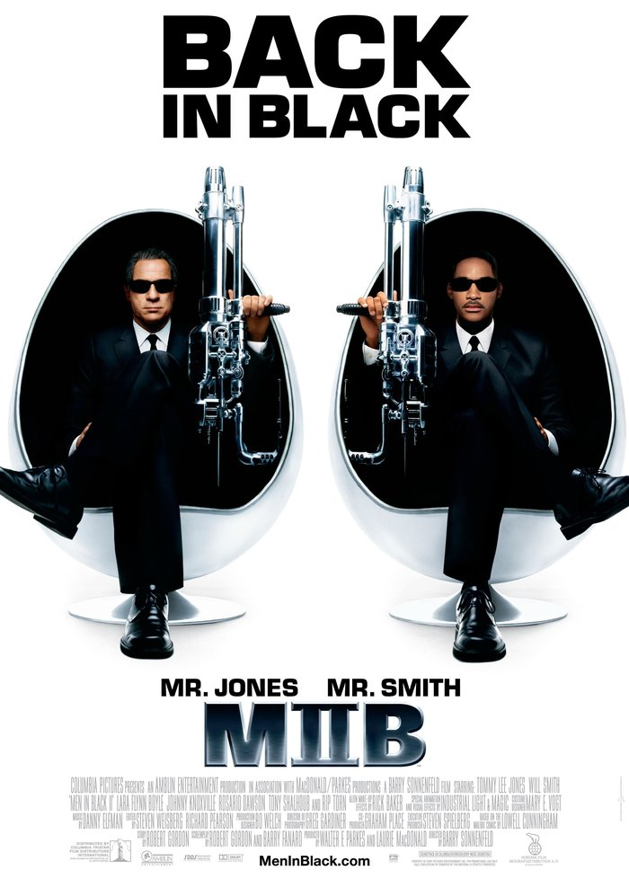
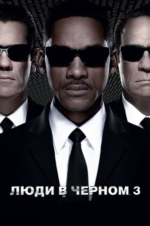
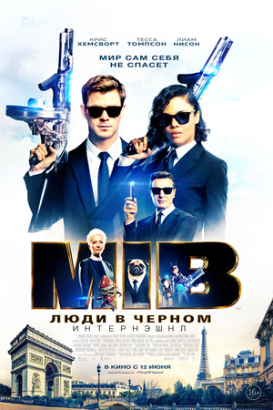

Описание
Они — самый большой секрет Земли. Они работают на неофициальное правительственное
агентство,
регулирующее
деятельность инопланетян на Земле.
Они — это лучшая, последняя и единственная линия защиты Земли от отбросов вселенной. Их работа секретна, их
оружие совершенно, им нет равных, они не оставляют следов. Они — это Люди в черном. Они — самый большой
секрет Земли. Они работают на неофициальное правительственное
агентство,
регулирующее
деятельность инопланетян на Земле.
Они — это лучшая, последняя и единственная линия защиты Земли от отбросов вселенной. Их работа секретна, их
оружие совершенно, им нет равных, они не оставляют следов. Они — это Люди в черном.
Сценарий был написан по мотивам графических новелл The Men in Black Ловелла Каннигама. Эти комиксы были изданы в 1990 году и не были широко известны даже в США. Фактически авторы позаимствовали оттуда только идею о некоем полумифическом и законспирированном правительственном ведомстве по делам пришельцев. Здесь авторам удалось найти определённую изюминку в подаче материала, комедийную предпосылку для свежих гэгов: агентство по работе с инопланетянами — не супергерои, а чиновники, и в некотором смысле даже бюрократы, которые всего лишь исполняют свою фантастическую, но рутинную работу. Общение с инопланетным разумом поставлено на поток, гуманоиды и не гуманоиды все стоят в общей очереди на таможню. В этом «Люди в чёрном» перекликаются с известными фильмами «Французский связной», «Охотники за привидениями» и сериалом 1960-х «The Man from U.N.C.L.E.». Такой необычный подход — визитная карточка Барри Зоннефельда, запомнившегося зрителям по подобным картинам («Семейка Аддамс», «Достать коротышку»).
  